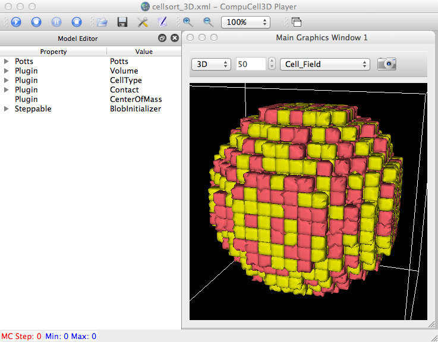

The Prefs:3D panel has/will have an input to specify which cell types should be rendered this way.
Per Abbas's suggestion, I've begun editing the Prefs "Cell Type" tab to include more columns in the Cell table:
---------------- 3D ------------- __Type___Name___Color___visible___contId___smooth___opacity